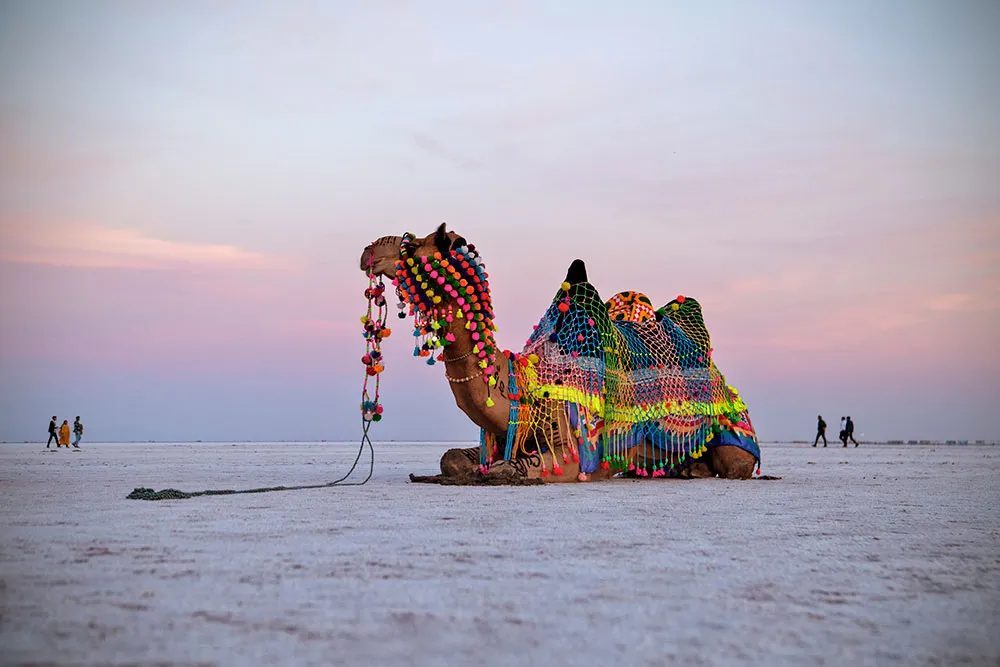
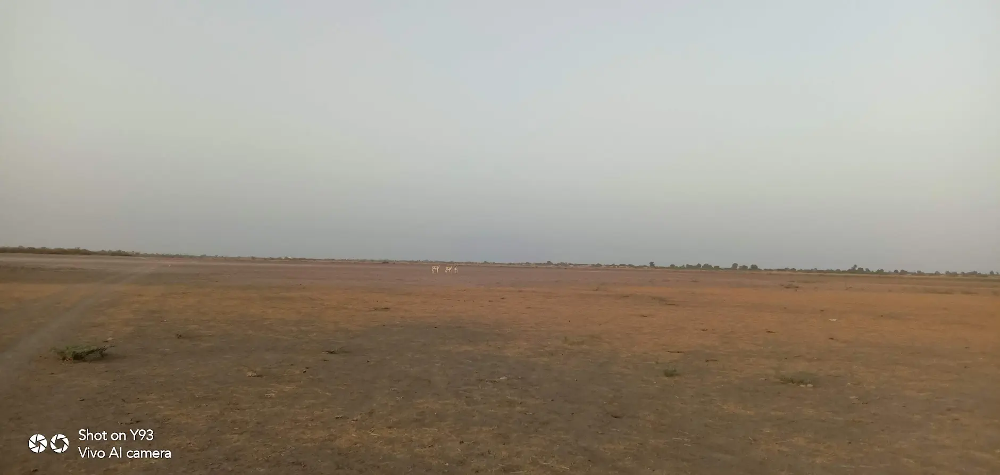
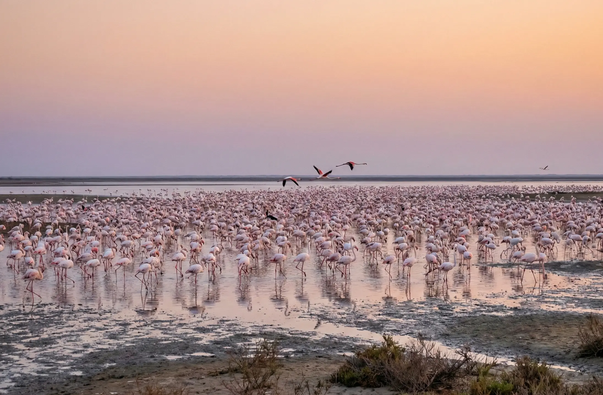
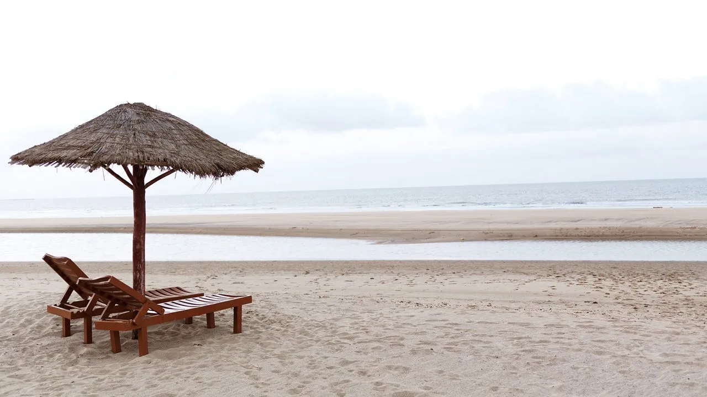

Kutch is virtually an island — surrounded by the Arabian Sea to the west, the Gulf of Kutch to the south, and the vast salt marshes of the Rann to the north and east. With an area of 45,674 sq km, it is the largest district in India, comprising 23.27% of Gujarat's total area. The landscape is a study in contrasts: from snow-white salt deserts to lush grasslands, from rocky hills to pristine beaches, Kutch offers some of the most unique geographical features on Earth.
At a Glance
Key geographical facts about Kutch
(Total Area)
(Desert Area)
(Highest Point)
(10 Talukas)
Rainfall
Range
Location & Boundaries
Kutch is situated on the western border of India, positioned between 22°44' to 24°41' North latitude and 68°09' to 71°54' East longitude. It lies just north of the Tropic of Cancer.
- North & Northwest: Pakistan (Sindh province)
- East: Banaskantha and Mehsana districts
- Southeast: Surendranagar district
- South: Gulf of Kutch and Rajkot district
- Southwest & West: Arabian Sea
Geological History
How Kutch was formed over millions of years
According to geologists, thousands of years ago, the land of Kutch was at the sea bed. Due to tectonic activities in the Earth's crust, this land gradually emerged above the sea. The region shows evidence of its marine origins in the fossils found throughout the area and in the salt deposits that characterize the Rann.
About 100 years ago, when the Hakra and Sindhu (Indus) rivers used to flow through this region, it was fertile land. But due to geological changes including earthquakes that altered watercourses, the flow of these rivers changed and the region became dry and barren. The famous 'Allah Bandh' (God's Dam) in the middle of the Sindhu River was created by the devastating 1819 earthquake, which literally stopped the river's flow.
🌍 Earthquake-Prone Region
Kutch lies on an active seismic zone and has experienced several devastating earthquakes throughout history. The most recent was the 2001 Bhuj Earthquake (7.7 magnitude) that killed over 20,000 people. The 1819 Rann of Kutch Earthquake created the Allah Bandh, a natural dam about 80 km long. These tectonic events continuously shape the geography, affecting the atmosphere, land, and mineral deposits.
Five Distinct Regions
The unique landscapes of Kutch
Kutch's landscape is remarkably diverse, comprising five distinct geographical regions, each with its own unique character, ecosystem, and beauty.
1. The Great Rann of Kutch
The Great Rann of Kutch is one of the largest salt deserts in the world, spanning approximately 7,500 square kilometers in the northern part of the district. The Hindi word "Rann" means "desert."
- Unique Desert: Unlike typical sand deserts, this is a salt desert with smooth, hard ground covered in layers of crystallized salt.
- Seasonal Transformation: During monsoon (June-October), it becomes a shallow wetland. As water evaporates, it transforms into a snow-white salt desert.
- White Rann: At Dhordo, the salt flat is so pure and white that it appears surreal, especially under moonlight.
- Mirage Effect: In summer, sunbeams hitting the white salty surface create spectacular mirages.

Experience the White Rann
Visit during Rann Utsav (Nov-Feb) to witness the magical salt desert. The Tent City at Dhordo offers premium accommodations with cultural performances.
Explore Dhordo →2. The Little Rann of Kutch

Wild Ass Sanctuary
The Little Rann is the only natural habitat of the endangered Indian Wild Ass (Ghudkhur). Safari tours available from Dhrangadhra.
Located southeast of the Great Rann, the Little Rann covers approximately 4,950 to 5,000 square kilometers. It is a seasonal salt marsh ecosystem and a hyper-arid saline desert.
- Bets (Islands): Elevated islands called "bets" or "medaks" stand 2-3 meters above the flood level, supporting vegetation and providing wildlife refuge.
- Wild Ass Sanctuary: Home to the endangered Indian Wild Ass (Equus hemionus khur), found nowhere else in the world.
- Rich Wildlife: Also supports chinkara, nilgai, blackbuck, Indian wolf, flamingos, pelicans, and various bird species.
- Salt Production: Traditional Agariyas (salt workers) produce salt using centuries-old techniques.
3. The Banni Grasslands
The Banni is Asia's largest tropical grassland, spanning approximately 2,500 to 3,847 square kilometers along the southern edge of the Great Rann. This arid grassland ecosystem emerged from the sea due to tectonic activities and received fertile soils from ancient rivers.
- Biodiversity Hotspot: Over 250 bird species (resident and migratory), 37 grass species, and diverse wildlife including flamingos at Chhari Dhand.
- Maldhari Community: Home to the pastoral Maldhari people who have lived here for centuries, known for their distinctive round mud houses (bhungas).
- Conservation Reserves: Includes Kutch Desert Wildlife Sanctuary and Chhari Dhand Conservation Reserve.
- Artisan Villages: Famous for embroidery, leather work, and traditional crafts.

Chhari Dhand Wetland
A seasonal wetland in the Banni that attracts thousands of migratory birds including flamingos, cranes, and pelicans during winter.
Explore Chaari Dhand →4. The Kutch Mainland
The mainland of Kutch is a rocky upland region that includes plains, hills, and dry riverbeds. While generally flat, it features several hill ranges and isolated hills, with Kalo Dungar (Black Hill) being the highest point at 462 meters (1,516 feet).
Northern Hill Range
The highest hills guard the Kutch region, located about 12km from Khavda village. Covered with different kinds of trees and tall grass, these hills offer panoramic views of the Great Rann.
Coastal Plains
The southern mainland transitions into coastal plains leading to the Gulf of Kutch, featuring ancient port towns like Mandvi and Mundra.
5. Arabian Sea Coastline & Mangroves
Kutch has an extensive coastline along the Arabian Sea to the west and the Gulf of Kutch to the south. The western coast features creeks and mangrove ecosystems that support rich marine life.
- Major Ports: Kandla Port (one of India's largest), Mundra Port (India's largest private port), and traditional ports at Mandvi.
- Beaches: Mandvi Beach is the premier beach destination, known for pristine shores and the Royal Vijay Vilas Palace.
- Shipbuilding: Mandvi has a 400-year-old tradition of wooden ship building (dhows) that continues to this day.
- Mangroves: Western creeks support mangrove forests that serve as nurseries for marine life and protect against coastal erosion.

Mandvi
Premier beach destination where history meets the Arabian Sea. Visit the palace, watch ship-building, and relax on pristine beaches.
Explore Mandvi →Climate
Extreme temperatures and three distinct seasons
Kutch experiences an extreme climate with significant temperature variations. Temperatures can range from as low as 2°C in winter nights to a scorching 45-50°C in peak summer. The average annual rainfall is very low, around 356 mm (historically), concentrated during the monsoon season.
☀️ Summer
February - June
Extremely hot with temperatures reaching 40-50°C. Dry and arid conditions. Not recommended for visits unless you can handle extreme heat.
🌧️ Monsoon
July - September
Some relief from heat with sparse rainfall. The Rann floods during this period. Landscape turns green. Roads to remote areas may be difficult.
❄️ Winter
October - January
Pleasant days (22-28°C) and cool nights (2-10°C). Best time to visit. Rann Utsav season. Migratory birds arrive.
Water Resources
Water is the most precious resource in Kutch. The region has no perennial rivers — all streams are seasonal, flowing only during monsoon. The unique hydrology of the Rann plays a crucial role:
- Salt Formation: Rainwater in the Rann doesn't seep into the ground quickly. Instead, seawater from the Gulf of Kutch mixes with rainwater. When it evaporates, salt is left behind, creating the characteristic white salt layers.
- Moisture Retention: The salt in the land attracts moisture from the atmosphere, keeping the surface smooth and moist even during harsh summer days.
- Major Dams: Rudramata Dam (near Bhuj), Tappar Dam, and various check dams provide water for agriculture and drinking.
- Narmada Canal: The Sardar Sarovar Narmada Canal has brought water to parts of Kutch, transforming agriculture in some regions.
Major Centres
Towns and cities of Kutch
Kutch has 10 major towns spread across its vast landscape. Each town has its own unique character, from ancient heritage centers to modern commercial hubs.
Bhuj
The district headquarters and cultural heart of Kutch. Home to palaces, museums, and traditional bazaars. Perfect base for exploring the region.
Gandhidham
Kutch's largest and most modern city. Commercial hub and gateway to Kandla Port. Well-connected by rail and road.
Kandla
One of India's largest ports on the Gulf of Kutch. Major trade and export hub handling cargo from across the nation.
Nakhatrana
Agricultural town in central Kutch known for its dairy industry. Gateway to northern Kutch's craft villages and Banni grasslands.
Mandvi
Historic port town and premier beach destination. Famous for Vijay Vilas Palace and 400-year-old shipbuilding tradition.
Bhachau
Taluka headquarters in eastern Kutch, devastated in 2001 earthquake and rebuilt. Known for nearby textile craft villages.
Mundra
Home to India's largest private port. Fascinating mix of modern industry and historic walled city with spice trade heritage.
Naliya
Gateway to western Kutch's spiritual destinations. Nearest town to Narayan Sarovar, Koteshwar, and Lakhpat.
Khavda
Northernmost town near the India-Pakistan border. Gateway to Kalo Dungar and the Great Rann. Known for traditional crafts.
Explore More
History of Kutch
From the ancient Indus Valley Civilization to the Jadeja rulers — discover the rich history that shaped this land.
Landscapes
Explore the stunning visual diversity of Kutch — from salt deserts to beaches, from rocky hills to grasslands.
Kalo Dungar
Visit the highest point in Kutch (458m) for panoramic views of the Great Rann and the evening jackal feeding ritual.
Hidden-Gems
Discover the secret natural wonders of Kutch beyond the tourist trail — wetlands, ancient sites, and scenic viewpoints.